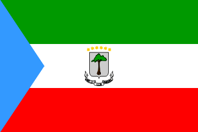

Pick a song to sing along, or head to practice to test what you know.
Sing through all 20 countries, in order
Country and capital, sung together
Country ↔ Capital, Song Order, and Compare

A quick look at a Spanish-speaking country beyond the songs